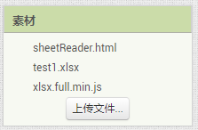
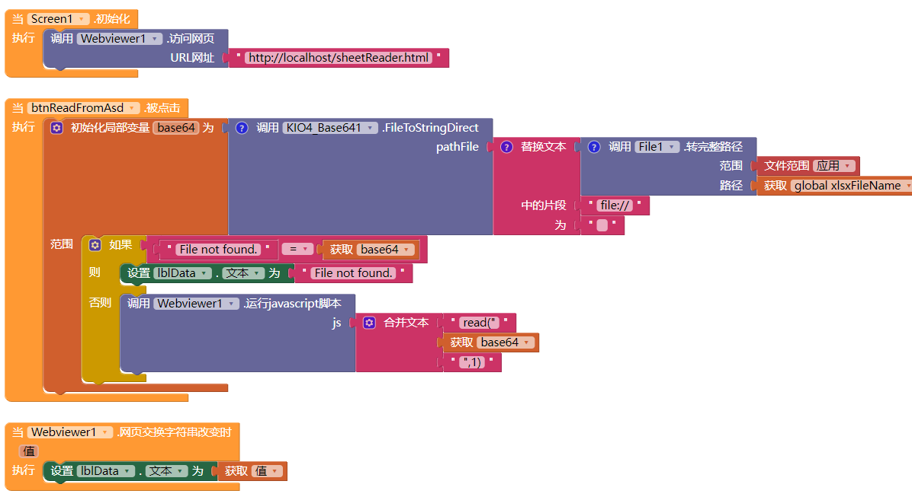
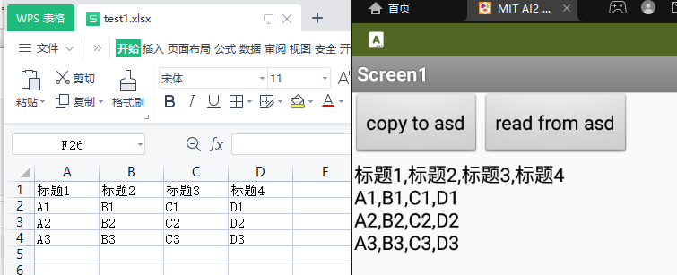

读取excel文件
首先读取excel文件的base64文本，在网页浏览器中借助sheetjs，将base64转为内容文本。支持xls文件和xlsx文件。
准备工作
-
下载xlsx.full.min.js, 相关文档在这里
-
构造转换函数,保存为sheetReader.html。
<!DOCTYPE html> <html lang="en"> <head> <meta charset="UTF-8"> <title>sheetjs</title> <script src="xlsx.full.min.js"></script> </head> <body> <div id = "data"></div> <script> function read(base64str,sheetIndex) { let basestr = base64str.substring(base64str.indexOf(',')+1); const wb = XLSX.read(basestr,{type:'base64'}); let csv = XLSX.utils.sheet_to_csv(wb.Sheets[wb.SheetNames[sheetIndex-1]]); window.AppInventor.setWebViewString(csv); } </script> </body> </html> -
将以上两个文件和你的xls文件上传到素材。要读取的文件不是必须是素材，可以放在ASD中或者其他有读取权限的地方都可以。本示例是读取ASD. 
-
我们还需要一个Base64扩展，可以把xls文件转为base64.
-
相关代码 
-
首先让网页浏览器访问转换的网页
-
FileToStringDirect方法可以把文件转为base64文本
-
将base64文本用read函数读取出来。read函数需要两个参数，一个是base64文本，二是工作表在工作簿中的序号。示例中是第一个工作表。
-
在网页交换字符串改变事件接收读取的xls内容，应该是个csv表
- 运行结果如图： 